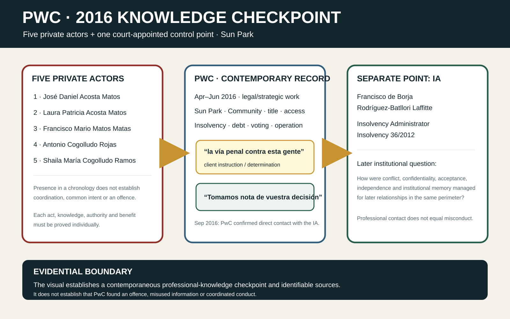
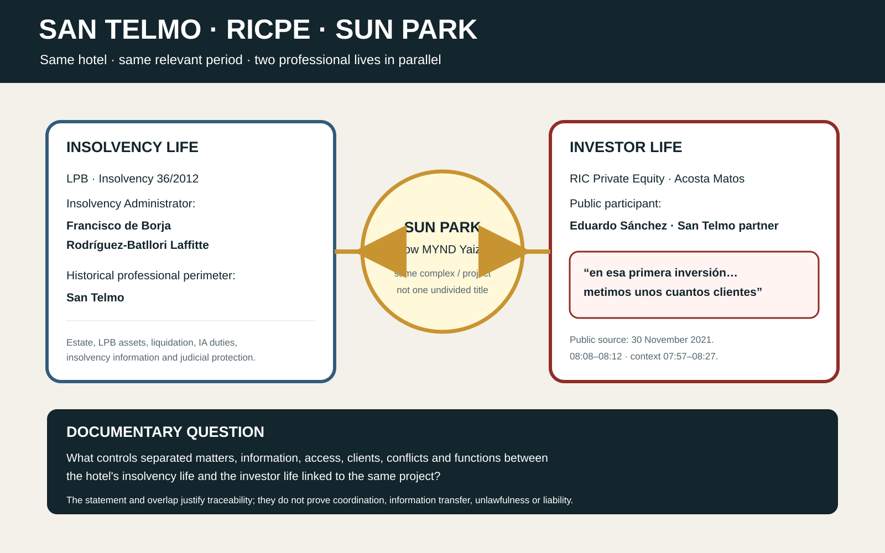

Central electronic notice
Sent to the verified corporate functions for Legal/Compliance and Franchise EMEA & Owner Relations. Direct addresses and the full confidential communication are not published here.
CENTRAL RHG NOTICE → PRESERVATION → CONTRACTUAL PERIMETER → OPEN MESSAGE
On 20 August 2026, a confidential communication was sent to Radisson Hotel Group’s central Legal/Compliance and Franchise EMEA & Owner Relations functions, with a request for routing to Internal Audit and the competent ethics group. This record publishes the fact of transmission, its documentary context and a partly anonymised open message to a professional or collaborator in the Acosta Matos / Canarian Hospitality / RICPE perimeter.
Email sent · receipt, routing and review pending
1 · Institutional action on 20 August 2026
Sent to the verified corporate functions for Legal/Compliance and Franchise EMEA & Owner Relations. Direct addresses and the full confidential communication are not published here.
RHG was expressly asked to assign a central, independent and conflict-cleared owner and to create an identifiable case reference.
RHG was asked to consider a legal hold or equivalent measure covering contracts, KYC/UBO, diligence, finance, brand, franchise, access records, communications and metadata.
2 · Why RHG has a direct corporate interest
Canarian Hospitality identifies Radisson Blu Resort Lanzarote as its first franchised property and describes its operating model with international brands.
Canarian Hospitality states that its project has financial and strategic backing from Grupo Acosta Matos.
The operator itself attributes the refurbishment/transformation of the Lanzarote Radisson property to Grupo Acosta Matos.
RICPE’s September 2023 prospectus places Radisson Blu Lanzarote and MYND Yaiza — formerly Sun Park — within its portfolio, with separate MYND works and employment financing components.
Separate-legal-person rule. RHG, Canarian Hospitality, Grupo/Construcciones Acosta Matos, Las Coronas de Teguise, Hotel New Trend, MYND Yaiza, RICPE and every individual are distinct subjects. The documented connection justifies diligence and preservation; it does not by itself establish shared knowledge, agreement, breach or liability.
3 · Visual sources transmitted


The confidential RHG communication included both visuals in English and Spanish. This page uses controlled public derivatives; they are not additional independent evidence and do not replace the original sources.
4 · Professional-custodian context
| Firm / reference | Controlled status | Limited relevance to RHG |
|---|---|---|
| RSM · NNR4-1025C2F66 | RSM confirmed that its Ethics & Deontology Committee was continuing to analyse the material and identified September 2026 as the expected conclusion window. No substantive conclusion has been published. | Potential custodian of the San Telmo legacy and records capable of confirming or excluding matter separation, access, conflicts and client introductions. |
| Grant Thornton · 2024_04 | The file was closed on a stated entity, dependency and professional-status analysis. A supplement concerning institutional memory, functional perimeter and preservation has been submitted; reopening is not asserted. | Illustrates why a purely formal entity or employment answer does not replace functional reconstruction of contracts, systems, access and engagements. |
| PwC · 2026 institutional notice | PwC Spain and Global/UK Legal & Risk functions received a preservation and reconciliation request concerning the 2016 Sun Park file and any later overlapping mandates. No later substantive determination has been located. | Potential custodian of historic title, Community, insolvency, strategy, KYC, conflict and later-professional-relationship information. |
These routes are not three findings or three endorsements of the allegations. They are procedural states and potential sources of independent verification.
5 · Partly anonymised open message
This message does not presume that you acted improperly. Your identity is deliberately omitted while there is insufficient primary basis to individualise your role publicly. The immediate question is documentary: what function did you perform, for which entity, on what dates, under what mandate and with what information?
If you participated — directly or indirectly — in a professional, contractual, financial, technical, brand, franchise, operating, refurbishment, diligence, introduction, approval or communication relationship involving any of the following perimeters:
you are asked to preserve immediately, within the applicable legal and professional limits, the records capable of resolving the following questions.
A documentary response or precise correction within ten working days will permit it to be incorporated before any later institutional expansion.
A short response stating that this message does not concern you and, if known, identifying the correct entity or function is also useful. Every substantiated correction or materially different explanation will be incorporated with equivalent prominence.
Silence will not be represented as an admission. The record will show only that an opportunity for preservation, clarification and response was offered.
6 · What is not asserted